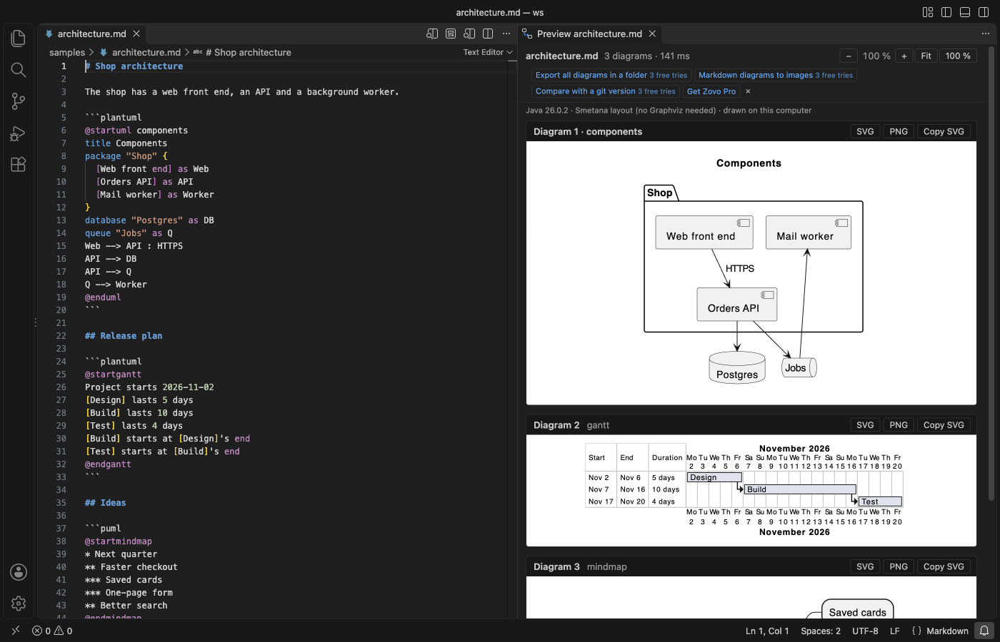
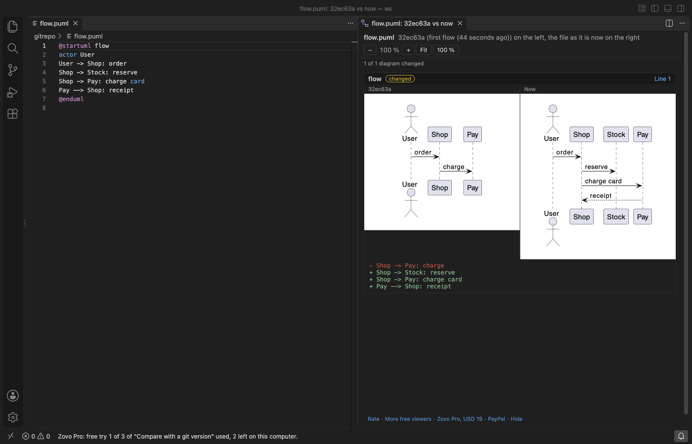

PlantUML Viewer & Preview
PlantUML Viewer & Preview, a VS Code extension by Zovo
See PlantUML diagrams as you type, drawn on your own computer. Open a .puml file or a Markdown file with a plantuml block, click the preview button, and the diagram appears beside your code. Nothing is sent to a server.
Free, MIT license. Needs VS Code 1.90.0 or newer. Extension ID zovo.zovo-plantuml-viewer, version 0.1.0.
Zovo Pro: USD 19 once, every Zovo tool. The viewer, the preview and single-diagram saves are free.

Questions people ask
Is PlantUML Viewer & Preview free?
Yes. PlantUML Viewer & Preview is free and MIT licensed.
How do I install PlantUML Viewer & Preview?
Click "Install in VS Code" above, or search for zovo.zovo-plantuml-viewer in the Extensions view.
Free
- Live preview of
.puml,.plantuml,.iuml,.puand.wsdfiles, and of ```plantuml``` blocks in Markdown - Every diagram of a file in one preview; the one under the cursor is outlined
- Zoom (buttons, Ctrl or Cmd + wheel, + and - keys), fit to width, drag to pan
- Errors show the PlantUML message and a link to the line
- Save one diagram as SVG or PNG, or copy it as SVG
- Syntax colours, snippets (
seq,classd,activity,mindmap,ganttand more), folding and comments - Runs the bundled PlantUML jar (MIT build 1.2026.10) with your Java. No PlantUML server, no Graphviz needed
Java 11 or newer is needed. The extension finds it through plantumlViewer.javaPath, JAVA_HOME, PATH or the usual JDK folders, and tells you in the preview when it is missing.
How it works
PlantUML is a Java program. This extension ships the MIT-licensed build of the PlantUML jar and keeps one PlantUML process running per folder while a preview is open, so a small diagram redraws in a few milliseconds instead of starting Java each time.
- No network: PlantUML runs with its
ALLOWLISTsecurity profile.!includereads files from the diagram's folder, your workspace folders and the folders you add inplantumlViewer.includePaths. Includes from web addresses are refused. The standard library (!include <C4/C4_Container>and others) is inside the jar and works offline. C4, AWS icon and icon-font includes written ashttps://raw.githubusercontent.com/...addresses are read from that copy too, so most C4 and AWS diagrams draw without a download. - Layout: sequence diagrams, mind maps, Gantt charts and most others need no layout engine. Class, component, state and use case diagrams use Graphviz when
dotis installed (plantumlViewer.layout: auto) and the Smetana engine built into PlantUML when it is not. - Safe display: diagrams are shown as images, so links or text inside a diagram cannot run code in the editor.

Zovo Pro tools
Each tool has 3 free tries on your computer. A try counts only when the tool wrote its output.
- Export all diagrams in a folder: every diagram of every PlantUML file in a folder and its subfolders, to SVG, PNG or PDF, next to each file or in one folder. Diagrams with errors are listed with file, line and message; the rest are written.
- Markdown diagrams to images: renders the
plantumlblocks of one Markdown file or a whole folder to image files and adds an image link under each block, so GitHub, GitLab and wikis show the diagram. Or replace each block with its image and keep the code folded under it. Running it again updates the same links. - Compare with a git version: draws a diagram as it is now next to the same diagram in another commit or branch, with the changed lines listed under it.
The tools are in the preview's toolbar, in the Command Palette under PlantUML, and on the Explorer right-click menu. Turn them off with plantumlViewer.showProTools.

Settings
| Setting | Default | What it does |
|---|---|---|
plantumlViewer.javaPath | empty | The java program or a JDK folder |
plantumlViewer.layout | auto | auto, smetana or graphviz |
plantumlViewer.dotPath | empty | Path to Graphviz dot |
plantumlViewer.includePaths | [] | More folders !include may read |
plantumlViewer.renderDelay | 400 | Milliseconds after typing before a redraw |
plantumlViewer.renderTimeoutSeconds | 30 | A diagram that takes longer is stopped |
plantumlViewer.javaMemoryMb | 768 | Java memory limit for PlantUML |
plantumlViewer.maxImageSize | 8192 | Largest image side in pixels |
Known limits
- Java 11 or newer must be installed; the extension does not download Java.
- AWS icons are read from the AWS icon set inside PlantUML (version 20). An icon added to AWS's set after that shows an error naming it.
- The MIT build of PlantUML does not include Ditaa or the LaTeX renderer behind
@startmath; a Ditaa block shows PlantUML's "not supported" page. - Without Graphviz, Smetana lays out class and component diagrams a little differently from Graphviz; very large class diagrams can look tighter.
- A preview of a file in a virtual workspace (for example a remote repository opened in the browser) draws the diagram, but
!includereads only files on this computer.
Guides
- Preview a PlantUML diagram in VS Code as you type
- Show the PlantUML diagrams of a Markdown file on GitHub
- PlantUML Text Preview Online, free in your browser with no upload
Install PlantUML Viewer & Preview
Click the button to open VS Code and install it, or press Ctrl+P (Cmd+P on macOS) in VS Code and run ext install zovo.zovo-plantuml-viewer.
Free, MIT license. Needs VS Code 1.90.0 or newer. Extension ID zovo.zovo-plantuml-viewer, version 0.1.0.
Source code and issues are on GitHub.
Zovo Pro and support
Zovo Pro: USD 19 once, every Zovo viewer. It turns on the Pro tools in this extension and in the other Zovo extensions you use. The free features stay free.
After a card payment your license key shows on the next page. Paste it with the command "Zovo Pro: Enter a key".
You can also support the work with no Pro:
Need your format supported?
Open a format request with a sample file, and I reply there whether it can be done. For USD 299 once, through this GitHub Sponsors tier, I add your file format or a missing feature to this extension, with tests, within 7 days.